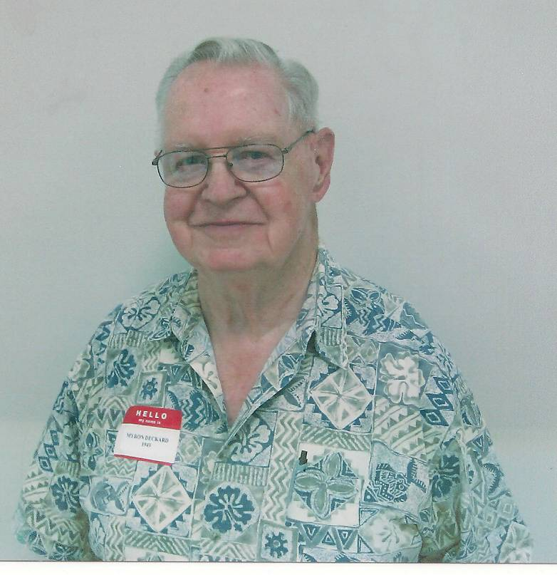
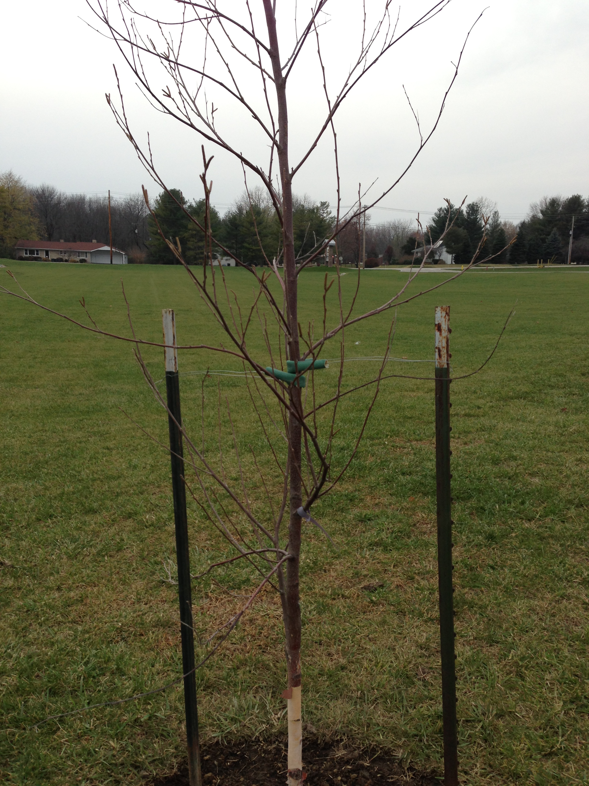
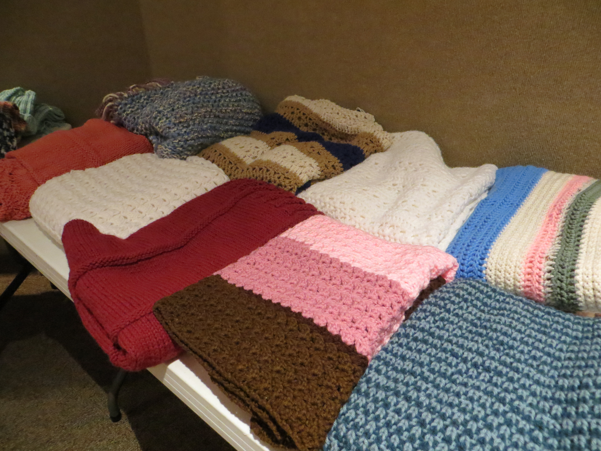
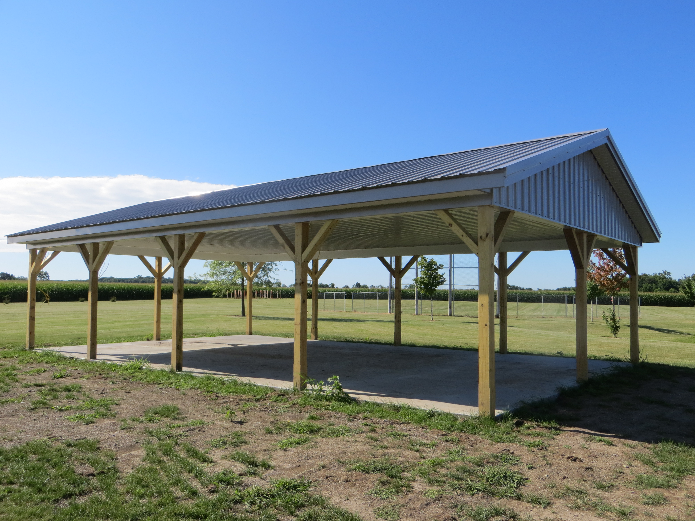

Myron B. Deckard
January 1, 1931 to December 5, 2011
Relationship to St. Andrew:
Myron was a long-time member of St. Andrew. He was also a charter member of the Epworth Heights Methodist Congregational Church which merged with St. Andrew E.U.B. to form St. Andrew U.M.C. Myron served on committees and he did a majority of the woodwork in the church. Most recently he built all of the shelving and desk for the senior Pastor’s office in the new church.
Family:
Myron married Doris A. Johnson on June 11, 1950 in Linden, IN. They had four children: Donna Deckard (husband Steven) lives in Las Crusces, New Mexico, Lou Ann Zachariah (husband Michael deceased) lives in Colorado Springs, CO., Randy Deckard and an infant daughter, Myra are deceased. Myron and Doris had four grandchildren and four great grandchildren.
Recognitions, Activities, Special Interests:
Traveling, family, and woodworking filled Myron’s time. He enjoyed traveling the country to visit friends and family. Myron also did some extensive international traveling.
Use of Memorial Funds:
Contribution to Hiefer International, to acknowledge his farm life as a child. A tree, to represent life and his woodworking interests and talents is planted on the west end of the parking lot. Contribution to the church for outreach to shut-ins, including the Shawl Ministry and In-touch ministry. Donation to the Picnic Shelter Fund.
Published in the Journal & Courier on December 6, 2011
Myron Deckard
 Myron B.
Deckard
Myron B.
Deckard
Myron B. Deckard, 80, of West Lafayette, passed away in his home with his
daughters by his side at 4:30 AM Monday, December 5, 2011.
Born January 1, 1931, in Linden, to the late Charley and Bessie Camp Deckard.
Myron was the owner of Deckard's Custom Cabinets and Bix Furniture Stripping
and Refinishing for 37 years.
On June 11, 1950 he married Doris Arnell Johnson in Linden. She passed away
June 23, 2005.
He was a member of St. Andrew United Methodist Church. Following his retirement
in 1996, Myron continued his love of woodworking by turning bowls and traveling
with his wife to visit family and friends around the country. Myron will be
remembered for his kind heart, helping nature and sense of humor.
Surviving are two daughters Donna Deckard of Socorro, NM, Lou Ann Zachariah of
Colorado Springs, CO,
a sister Alice Artman (husband John) of Whitestown, three granddaughters, 1
grandson, 3 great grandsons and 1 great granddaughter.
He was preceded in death by a daughter Myra Deckard, a son Randy Deckard, a
son-in-law Michael Zachariah, six brothers and one sister.
Visitation will be 5 to 7 pm Thursday December 8, 2011 at Soller-Baker
Lafayette Chapel with Funeral Services at 10:00 am Friday, December 9, 2011 at
Soller-Baker Lafayette Chapel 400 Twyckenham Blvd. Lafayette, IN 47909, with
Dr. J. Philip Klinger and Pastor Bonnie Shoaf officiating. Burial will follow
at Tippecanoe Memory Gardens.
In lieu of flowers those wishing may contribute to Serenity Hospice or charity of choice .
You may offer condolences at www.soller-baker.com

The Tree West of Parking Lot

Shawls made for ministry use
Heifer International Logo

The picnic shelter completed in July of 2013